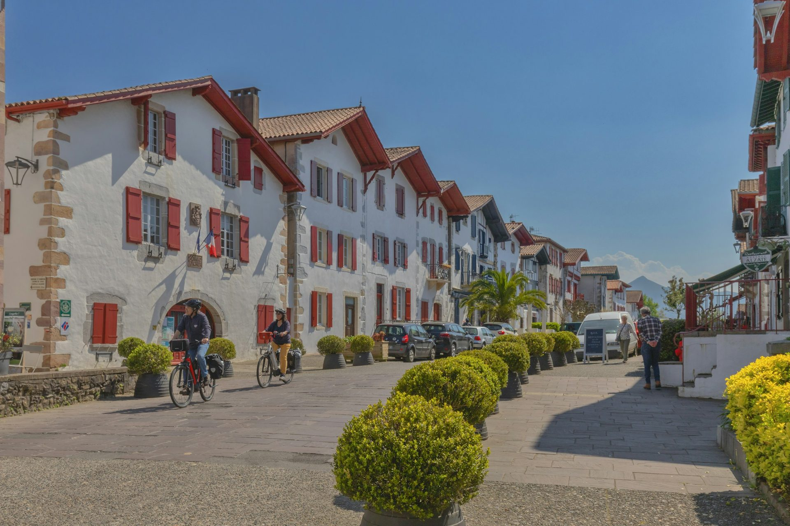
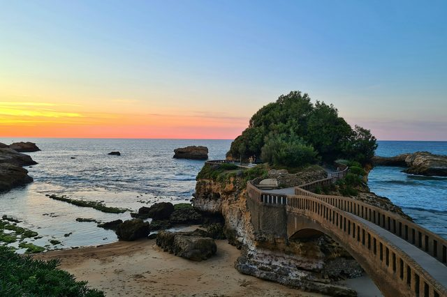
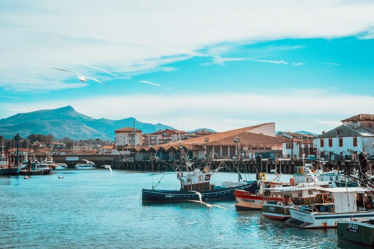
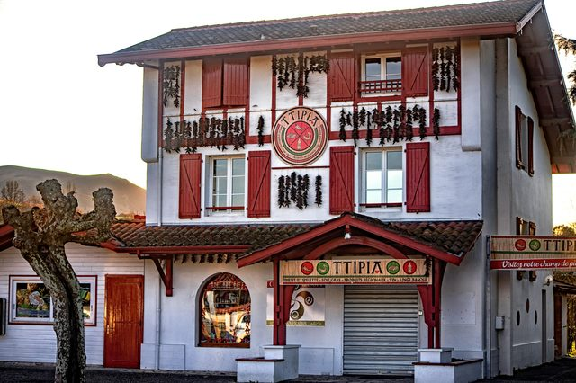

The Basque Country, between ocean and mountains
Surf beaches, fishing ports, villages of white and red houses and La Rhune in the background: the French Basque Country fits into a few dozen kilometres.
Photo: Jordi Vich Navarro / Unsplash
The French Basque Country covers the west of the Pyrénées-Atlantiques, between the Adour and the Spanish border. On the coast, Biarritz and Saint-Jean-de-Luz alternate big beaches with ocean-battered rocks; inland, Bayonne and villages such as Espelette and Ainhoa have kept their red and green half-timbered houses.
The TGV links Paris to Bayonne and Biarritz in just over four hours, and Biarritz airport is served all year. The main towns are less than half an hour apart. Each guide tells you what to see, how to get there and what to book.
Things to see in the Basque Country
-

BiarritzThe Rocher de la Vierge, Belle Époque villas and the surf spots of the Côte des Basques.
-

Saint-Jean-de-LuzThe sheltered bay, the fishing port and the church of Louis XIV’s wedding, facing La Rhune.
-
 Bayonne
BayonneThe colourful houses of the Nive quays, the cathedral and the historic chocolate makers.
-

EspeletteWhite and red house fronts hung with peppers, in the heart of the Basque villages.